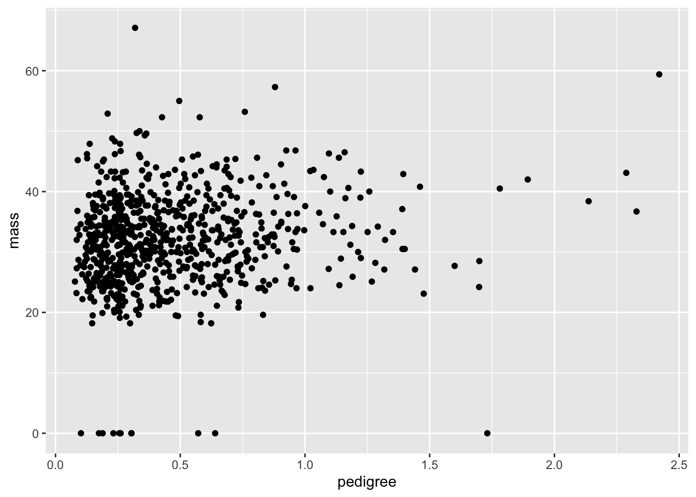
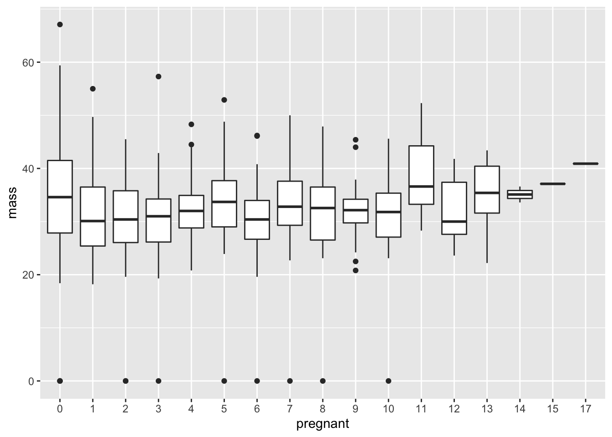

ggplot2: Pretty pictures made prettier
1 The ggplot2 and dplyr packages
Now that we’ve made a good and honest attempt at understanding R from a programming point of view, let’s return to making some nice looking figures. Our focus is on the ggplot2 package, which allows us to create more professional looking figures than the basic graphing tools included in R. A package, by the way, is an extension of R’s programming language. It makes sense that RStudio wouldn’t have the thousands and thousands of commands written by the R community on command. This would be far too large for a standard laptop to store. Instead, we call on packages by using the library function.
The dataset we’ll be using is the PimaIndiansDiabetes dataset. Loading this dataset also requires calling on another package called mlbench. Let’s load it up and call on the dataset:
library(mlbench)
data("PimaIndiansDiabetes")It is also possible to load a library by clicking on the “Packages” tab in the lower right pane of RStudio, searching for your package, and clicking on the appropriate box. Sometimes your desired package won’t be installed, so you’ll need to click on the “Install” icon at the top of the packages window and look for it there.
What does our dataset look like?
?PimaIndiansDiabetes
str(PimaIndiansDiabetes)## 'data.frame': 768 obs. of 9 variables:
## $ pregnant: num 6 1 8 1 0 5 3 10 2 8 ...
## $ glucose : num 148 85 183 89 137 116 78 115 197 125 ...
## $ pressure: num 72 66 64 66 40 74 50 0 70 96 ...
## $ triceps : num 35 29 0 23 35 0 32 0 45 0 ...
## $ insulin : num 0 0 0 94 168 0 88 0 543 0 ...
## $ mass : num 33.6 26.6 23.3 28.1 43.1 25.6 31 35.3 30.5 0 ...
## $ pedigree: num 0.627 0.351 0.672 0.167 2.288 ...
## $ age : num 50 31 32 21 33 30 26 29 53 54 ...
## $ diabetes: Factor w/ 2 levels "neg","pos": 2 1 2 1 2 1 2 1 2 2 ...A main goal of this section is to get you associated with two packages found in R: dplyr, a set of tools and functions used for manipulating data, and ggplot2, a very clean format for creating attractive visuals. Both of these packages are true gems, and make data visualization downright enjoyable.
So let’s load them up:
library(ggplot2)
library(dplyr)Note: if R is getting mad at you and claiming that such packages don’t exist, then it could be one of two things. First, under the packages tab on the bottom right of RStudio, search to see if your packages exist. If not, click on the “Install” icon at the top left of the same pane, and download whatever package you need. It can also be the case that your current version of R is old. If this is the case, click here and follow the instructions for getting the newest version of R and RStudio.
2 Types of visuals
2.1 Scatter plots
Let’s take a look at a scatter plot which compares triceps skin fold versus glucose levels:
ggplot(data = PimaIndiansDiabetes) +
geom_point(mapping = aes(x = triceps, y = glucose))Let’s break down each of these parts step by step. First, note that ggplot2 uses what’s called a grammar of graphics. Bits and pieces of visuals are strung together using a plus sign. The first such step is to write ggplot, and to include your dataset as the first argument. The next function tells us what type of visual we are interested in. In our case, we want a scatter plot, which is given by geom_point. Inside this function, we include our aesthetic mapping argument, which tells us which variables to include (triceps fold vs glucose levels).
The visual we see is helpful in that we note its warts immediately. In particular, our scatter plot is suggesting that multiple people have a triceps fold of 0. This isn’t the result of a new diet. Rather, this dataset, like many datasets encountered in real life, contains some obvious errors. When finding data with errors, there are several ways to confront it. One is to just play with the hand your dealt, and tell your audience what you find as suspicious. You can also remove suspicious datapoints, in which case you should certainly tell your audience. Other methods for dealing with data cleaning will be dealt with in future labs.
Do you see any trends in the previous visual? If so, your eyes are probably pretty strained, as the author certainly doesn’t see anything on note. Let’s look at something a little clearer and compare mass and glucose levels.
ggplot(data = PimaIndiansDiabetes) +
geom_point(mapping = aes(x = mass, y = glucose))This isn’t exactly a perfect correlation (we’ll get to what that means later), but the data does suggest to a certain degree that larger mass trends with higher glucose levels. We also have some clear errors: people with zero mass or glucose levels can’t exist.
The aesthetic argument can include additional variable in different forms. For example, let’s color datapoints corresponding to whether a person has diabetes.
ggplot(data = PimaIndiansDiabetes) +
geom_point(mapping = aes(x = mass, y = glucose, color = diabetes))Q: What does this graph suggest about diabetes and glucose levels? Diabetes and mass?
Now let’s take a look between the diabetes pedigree function and the mass.
Q: What on earth is the diabetes pedigree function? Note that just looking at is not very helpful in actually defining this. You’ll have to consult the internet instead.
ggplot(data = PimaIndiansDiabetes) +
geom_point(mapping = aes(x = pedigree, y = mass))
Now let’s add an indicator for diabetes:
ggplot(data = PimaIndiansDiabetes) +
geom_point(mapping = aes(x = pedigree, y = mass, color = diabetes))
Q: One could imagine that the diabetes pedigree function could be used to detect whether a patient has diabetes. Does this seem to be the case?
The color aesthetic that we used can be changed to alpha, which gives a shading level as the diabetes variable changes. But beware! It’s not advised to use alpha for discrete variables. In our case, diabetes isn’t just discrete, it’s binary, meaning that there are only two possible outputs (positive or negative).
ggplot(data = PimaIndiansDiabetes) +
geom_point(mapping = aes(x = pedigree, y = mass, alpha = diabetes))## Warning: Using alpha for a discrete variable is not advised.R is even nice enough to give us a warning that that we shouldn’t be using alpha for discrete variables.
Q: Hold on though. What if you just want to plot the diabetes variable in the grey scale? After all, many journals require black and white photos, both for ease in production and as a friendly gesture to colorblind folks.
ggplot(data = PimaIndiansDiabetes) +
geom_point(mapping = aes(x = pedigree, y = mass, color = diabetes)) +
scale_colour_grey()Still a bit messy, but getting there. Some more information on how to tweak with the grey scale is provided here.
2.2 Curve fitting
One of the best features of ggplot2 is that you can keep adding layers for more detailed visuals. For instance, we can include both a scatter plot and also a fitting of the points into a smooth function.
ggplot(data = PimaIndiansDiabetes, mapping = aes(x = pressure, y = mass)) +
geom_point()+
geom_smooth()## `geom_smooth()` using method = 'loess' and formula 'y ~ x'Q: Any thoughts on how this curve is generated? We’ll address a bunch of regression methods later, but for now just think of this curve as an approximation of what value of BMI is found on average for an input of pressure.
Observe that for a new layer, we just add a plus sign. Where you put the plus sign is important. Make sure to place it at the end of a line rather than the beginning.
Q: Place a plus sign at the beginning of a line rather than at the end. What happens?
2.3 An aggrevating example
Motivational aside: As lovely as ggplot2 is, it is still in the realm of programming, meaning that you will find yourself banging your head against the wall trying to fit what you want with what R is giving you. As with much of learning, be prepared to be wrong most of the time, especially when starting out. When (not if) R keeps giving you the wrong answer, the best option is to keep digging away. Programming requires thick skin, and the only way you’re going to achieve that is by working on problems that force you to change your initial solution strategies.
For a case in point, suppose I would like to make a series of box plots for BMI under each number of pregnancies.
The ggplot2 function for the box plot is given by geom_boxplot. A first guess would be
ggplot(data = PimaIndiansDiabetes, mapping = aes(x = pregnant, y = mass))+geom_boxplot()## Warning: Continuous x aesthetic -- did you forget aes(group=...)?This is not what we’re looking for. Instead of giving a box plot for each number of pregnancies from 0 to 17, we’re given a single box plot. From the warning message, it appears that the problem is that the \(x\)-variable cannot be continuous. Clearly number of pregnancies is a discrete variable, but R doesn’t know that. It’s just seeing numbers as the inputs. So it looks like we need to change this variable into characters.
To do so, let’s take a peek into the mutate function. This adds a new variables into the data frame (we’ll talk more about this soon). For our case, we need to create a new variable which is just pregnancies, but expressed as characters rather than numbers (e.g. `7’ instead of 7).
ggplot(data = mutate(PimaIndiansDiabetes, numpreg = as.character(pregnant)),
mapping = aes(x = numpreg, y = mass))+geom_boxplot()Oh, come on!
Q: What do you mean `Oh, come on!’? Isn’t this exactly what we wanted?
Sure, we technically have produced what was asked for. We have a collection of box plots corresponding to each number of pregnancies. But this graph still looks awful. The numbers are all jumbled below.
Q: How is R ordering the numbers?
The ordering below is called lexicographic, in which the first appearing characters are ordered first, then the second characters, and so forth. This is how a dictionary orders words. Thus we get an ordering \(\lesssim\) where
“13” \(\lesssim\) “2”
because the first character in “13”, which is “1”, is less than the first and only character in “2”.
While there must be something cleaner out there, here’s a `hack’ to get around this. The idea is to insert the “correct” ordering into the pregnant variable using the levels function.
PimaIndiansDiabetes$pregnant = ordered(PimaIndiansDiabetes$pregnant,
levels = as.character(sort(unique(PimaIndiansDiabetes$pregnant))))
ggplot(data = PimaIndiansDiabetes, mapping = aes(x = pregnant, y = mass))+geom_boxplot()
Q: Explain in detail why the ordering invoked in the levels argument makes sense.
Q: An open question: am I just being ridiculous here? Is there another way to get to this solution which is shorter or more elegant? Please tinker around and find out!
2.4 Some more box plots
Suppose we’d like to create boxplots based on continuous data. As an example, let’s say that we’re interested in looking at boxplots for glucose under different intervals of BMI. As we saw before, ggplot2 has issues with taking in continuous \(x\)-variables for box plots. To handle this, we add a new variable that bins continuous variables into different intervals, and then converts these intervals to character arguments. Here goes:
ggplot(data = mutate(PimaIndiansDiabetes, mass=cut_width(mass,width=20)))+
geom_boxplot(mapping = aes(x=mass, y=glucose) )
Note that our code is starting to get a bit hairy. We have to deal with nested arguments to create a new variable, and then place this inside the ggplot function to get our visual. Let’s take a look at a rather clever notational trick, courtesy of the dplyr package.
3 An important aside: the pipe operator
The pipe operator addresses a perennial irritation of mathematics: describing the composition of two functions. Suppose we take some number \(x\), apply the function \(f\) to it, and then apply another function \(g\) to our result. The resulting output is written as \[g(f(x))\] or perhaps \[g \circ f (x).\] Both expressions are read as “\(g\) of \(f\) of \(x\)”. This is a bit of a pain when looking at the order of things. We are used to putting things in order from left to right (perhaps with the exception of those associated with the Hebrew language). However, \(f\) is written to the right of \(g\), even though \(f\) is the first thing we do to \(x\). In fact, the composition really goes as \[ x \hbox{ then apply } f \hbox{ then apply } g\] dplyr has supplied us with an operator which roughly translates to “then apply”. This is called the pipe operator, written as . For an input \(x\) and a function \(f\), we have
f(x) =x %>% f
For example, let \(f(x) = x^2\) and \(g(x) = x+1\).
Q: Compute \(g(f(x))\), using the traditional composition notation and also with a pipe operator.
f = function(x){
x^2
}
g = function(x){
x+1
}
f(g(3))## [1] 163 %>% g %>% f## [1] 16Note the lack of parenthesis needed for the pipe. This really helps when putting several pipe operations together, as it can be confusing to nest several pairs of parentheses together.
3.1 Returning to our example
Now that we have the know how for composing functions in a clean way, let’s apply this to our previous graph
PimaIndiansDiabetes %>%
mutate( mass=cut_width(mass,width=20) ) %>% ggplot+ geom_boxplot(mapping = aes(x=mass,y=glucose) )It helps to read the pipe operator as “then”. In the above, we start off with the PimaIndiansDiabetes dataset. The next step is to change the datset, allowing for the renaming of mass to be binned. Then we are finally ready for using ggplot. Note the empty parenthesis. Note when we use parentheses. If a function originally has two arguments, then the pipe operator applies to the first argument. In other words, for functions \(g(x)\) and \(f(x,y)\), f(g(x),y) = g %>% f(y).
3.2 Histograms and frequencies
Let’s take a look at the number of pregnancies.
ggplot(data = PimaIndiansDiabetes , mapping = aes(x=pregnant) )+geom_bar()What if we want to look at percentages instead? In other words, we would like for the sum of values of the bars to sum to one. This would give an example of a probability mass function. One workaround for this is to use count and sumcount
ggplot(PimaIndiansDiabetes, aes(x = pregnant)) +
geom_bar(aes(y = (..count..)/sum(..count..))) +
xlab('Number of pregnancies') + ylab('Density')+ggtitle("Frequency of pregnancies")A quick shortcut here is to simply use ..prop..
Q: Verify that using ..prop.. in the aesthetic argument gives the same graph.